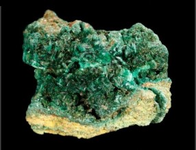

|
Protactínio |

Utilizações:
-A escassez do elemento e sua elevada radioatividade tornam seu uso no cotidiano muito complicado
-Como possível método para se obter a datação por meio de decaimento radioativo (com interesse na área de paleoceanografia)
O protactínio é um elemento natural.
 -Radioativo
-Radioativo